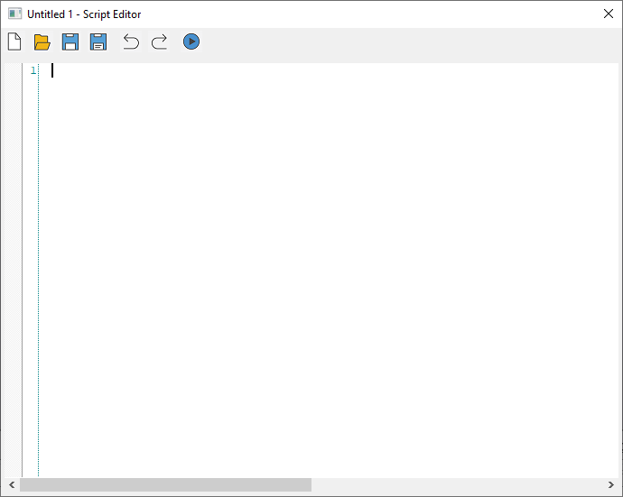
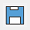
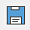
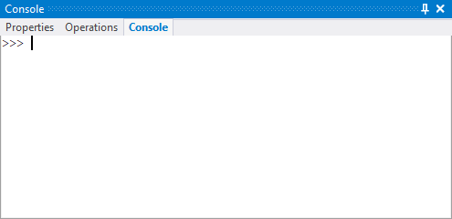
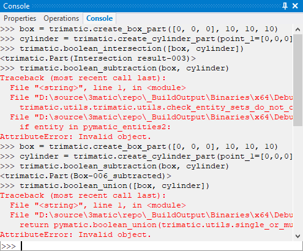
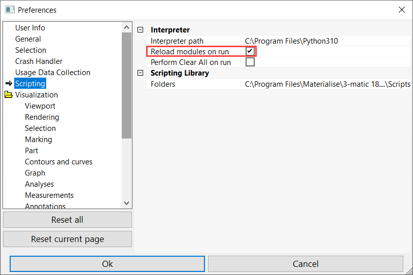
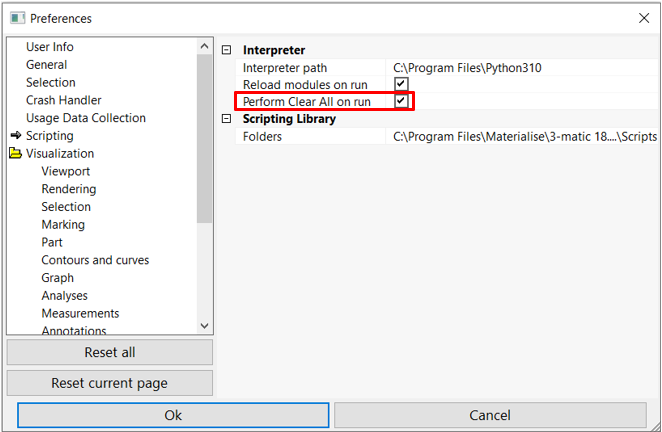
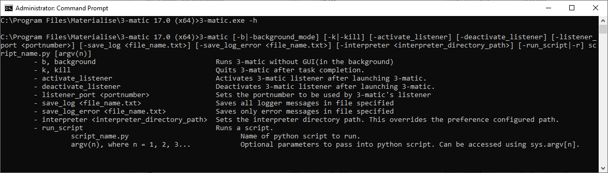

3. Scripting in 3-matic Quick Start Guide¶
3.1. Introduction¶
In this section we describe the functionality offered in 3-matic for editing and running python code. More advanced functionality is offered by external IDEs. This will be described in a separate section.
3.2. Python editor¶
The built-in Python editor of 3-matic is a basic editor to write and run Python scripts. It is accessed via Script -> Editor.
{kind=link}
In the Scripting Editor you can create a new project via the button. To save a project click the  or  buttons. You can open an existing project by clicking the button .
To run a script, click the button .
Close the window to exit the editor.
3.3. Python console¶
An alternative method for executing Python commands is via the built-in Python console in 3-matic. The console is found on the bottom-right of the Work Area.
{kind=link}
After commands are executed, the console will eventually be full of lines of commands, outputs and errors from the execution.
{kind=link}
3-matic allows you to clear the console so that you can maintain clearer visualization and reduce distractions due to executed commands. There are two methods available to clear the console:
- While the console is active, you can press shortcut key Ctrl + L:
{kind=link}
- Enter “clear” command in the console:
{kind=link}
Clearing the python console will not delete the history of the executed commands. History of the previously executed commands are preserved and can be found by pressing up and down key while the console is active.
3.4. Scripting Library¶
A third method for executing Python scripts is via the menu Script -> Scripting Library. You can specify a path to a script directory via Options & Help -> Preferences -> Scripting in 3-matic. Click on the folder field to open the Add path dialog. Use the New button (green arrow) to add a new path and use the Delete button (red arrow) to delete a path. The arrows on the right can be used to change the order of the created paths. This order will be reflected in the scripting library.
{kind=link}
Any scripts present in the specified folder(s) will automatically be registered under the Scripting Library. It is now possible to execute these scripts with a single click. This is the ideal method for users who need to execute a script without needing to see or modify the script. (You need to restart 3-matic for the changes to become effective.)
3.5. Autocomplete¶
The built-in Python editor and console support Autocomplete. The first step towards making the Autocomplete feature work is to install the Jedi 0.9.0 package to your local python directory using either the graphical package manager or pip. For an explanation on how to install a python package, we refer to the next section under introduction: Installing extra packages (optional).
Note that Autocomplete works for names of methods, arguments, variables, etc. You can press Tab or Enter to confirm the selection of the:
- module (i.e: import functools),
- function (i.e: trimatic.create_arc_3_points), or
- function argument (i.e: trimatic.create_arc_3_points(arc_side=)).
The Autocomplete feature can be deactivated using Ctrl + Shift + Space when the console tab is open. If you decide to reactivate Autocomplete, you can press Ctrl + Space.
3.6. Run script¶
To run an existing Python script, you can use the Script menu in 3-matic. You can click Script -> Run Script and select a Python file that contains a script. Click Run to run the script.
3.7. Run recent script¶
If you ran script(s) before, you can also select and run them from a list of most recent scripts via Script -> Recent Scripts.
3.8. Run Script Options¶
In complex workflows, it is likely that the workflow is separated into several smaller script files that are imported during the execution of the main script. By default, Python caches imported modules and any changes to imported modules are NOT immediately reflected until 3-matic is restarted. This can produce unexpected results when developing scripts.
3-matic allows you to override this behavior so that modifications to script files are immediately reflected upon the next execution. To force the reload of imported modules, go to Options & Help -> Preferences -> Scripting, and make sure the option Reload modules on run is checked ON. Note that this may have a small performance impact as some third party packages are known to not work with this reload mechanism. If you encounter such errors, it is recommended to turn this option OFF.
{kind=link}
Variables, functions, etc. created by your scripts are kept in memory for the duration of the active 3-matic session (referred to as a namespace). Depending on the script, there could be unintended side-effects to the current or future execution due to this persistence. The namespace can be cleared to a clean state by selecting Script -> Clear All. You can also specify that the namespace be cleared at the start of every script execution. Go to Options & Help -> Preferences -> Scripting, and check ON the option Perform Clear All on run.
{kind=link}
3.9. Command prompt (CMD)¶
You can run 3-matic and Python scripts from the Windows Command Prompt (cmd.exe). To do so, browse to 3-matic’s installation directory, and then run the 3-matic.exe file from there, using one or multiple parameters. The available parameters can be printed to the screen by adding the -h command (3-matic.exe -h).
{kind=link}